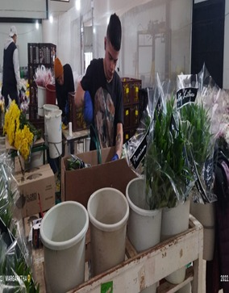
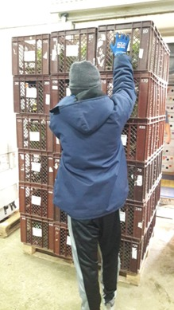
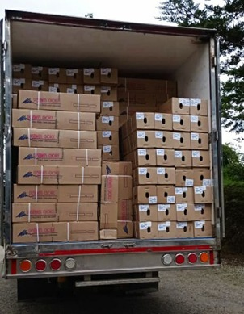

Hidratación: Lo primero que debes hacer es hidratar las flores cortadas, colocándolas en un recipiente con agua limpia y fresca, a la que puedes añadir un conservante floral o un bactericida. El objetivo es reponer el agua perdida durante la cosecha y evitar el desarrollo de microorganismos que obstruyan los vasos conductores. Debes sumergir los tallos hasta unos 10 cm por debajo de la superficie del agua y evitar que las hojas o las flores entren en contacto con el agua.
Clasificación: Lo segundo que debes hacer es clasificar las flores según su calidad, tamaño, forma y color. Debes separar las flores que presenten defectos, daños o enfermedades y descartarlas o tratarlas según el caso. Debes agrupar las flores que tengan características similares y asignarles un código o una etiqueta que indique su categoría.
Embalaje: Lo tercero que debes hacer es empaquetar las flores de forma adecuada, usando materiales que protejan las flores de golpes, rozaduras, deshidratación o contaminación. Debes envolver las flores con papel o plástico, según el tipo de flor y el estilo que quieras darle. Debes colocar las flores en cajas o contenedores que tengan el tamaño y la forma adecuados para evitar que se muevan o se deformen.
Almacenamiento: Lo cuarto que debes hacer es almacenar las flores en condiciones óptimas de temperatura, humedad y ventilación. Debes mantener las flores en cámaras frigoríficas o en lugares frescos y sombreados, evitando la exposición directa al sol o a fuentes de calor. Debes controlar la temperatura y la humedad relativa según el tipo de flor y el tiempo de almacenamiento. Debes ventilar las flores para evitar la acumulación de gases como el etileno, que acelera el envejecimiento de las flores.


Transporte: Lo quinto que debes hacer es transportar las flores con cuidado, usando vehículos adecuados y siguiendo las normas de seguridad. Debes acomodar las cajas o contenedores de forma que no se caigan, se aplasten o se golpeen. Debes mantener la cadena de frío durante el transporte, usando sistemas de refrigeración o aislamiento térmico. Debes evitar los cambios bruscos de temperatura o humedad que puedan afectar la calidad de las flores.